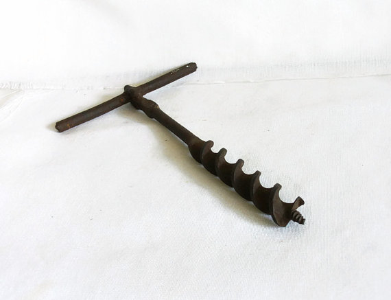

TNotSSmbtoaFBbtSiathatdwtB
Fantasy Faction Monthly Writing Contest Anthology, October 2015
"GoodReads Choice Awards 2014 Semi Finals" - http://hundredbooksayear.com
Wut? You couldn't figure out what I was meaning with this? Okay, okay, here it comes:
The name of the short story must be that of a fantasy bestseller but the story isn't allowed to have anything to do with that book.
So if your stories title is "the Name of the Wind" it isn't allowed to be about an orphan musician magician sex god king killer and the power of the true names of things.
I thought it was time for an open theme again, so get inspired by your home library, pick a book and write a completely different story about anything SF/F* you like.
If that's too open for you, you CAN (but don't have to) make it about All Hallow's Eve. Could be funny to write a story titled "Dune", "Old Man's War" or "Ready Player One" with a Halloween themed content.
All content originally appeared on the Fantasy Faction Forums in the Monthly Writing Contest. You can see more information (and even participate in the forums!) on this particular contest by visiting the site.
http://fantasy-faction.com/forum/(oct-2015)-tnotssmbtoafbbtsiathatdwtb/(oct-2015)-tnotssmbtoafbbtsiathatdwtb-submission-thread/
Table of Contents
- Steelheart by tebakutis
- The Lion, the Witch, and the Ward-robe by ClintACK
- The Princess Bride by Mr.J
- The Exorcist by Nora
- The Turn of the Screw by m3mnoch
- The Pit and the Pendulum by Henry Dale
- The Fires of Heaven by night_wrtr
- The Way of Kings by ChooChooChoo
- Alice in Wonderland by SJBudd
- The Lord of the Rings by Jmack
- Watchmen by OnlyOneHighlander
- The Spirit Thief by Elfy
- A Storm of Swords by Rukaio_Alter
- Prince of Fools by Saraband
- Twilight by Raptori & Saurus
- Pyramids by ArcaneArtsVelho
Steelheart
Nurse Mandy led Sammy to the park two weeks after the fatal accident. Sammy could finally walk to it without feeling faint. The bandages under her sweater and around her chest constricted movement.
The sad little park was mostly empty, a large square of TrueGrass with a fluffy purple-frond tree in its center. The plastic-y walls of the hospital surrounded it, closing it forever away from actual nature. Like Sammy, this park was a prisoner locked inside sterile walls, stuck beneath a damp gray sky.
There were only two other people in the park, and no children. A lady with a gleaming metal arm. A man walking on whirring metal legs. Broken people, now fixed, on the outside anyway.
"How do you feel?" Nurse Mandy asked, as they settled on a bench. "Can you breathe all right?"
Sammy nodded.
"Tightness in your chest? Pain in your arm?"
"No."
"So far as we can tell, your prosthetic heart is keeping up with blood flow, even under exertion."
"Okay."
"That's a good sign, Samantha. It means your body isn't rejecting the device."
Sammy wished it would. If her body rejected the metal box the doctors planted inside her shattered chest, she could see her parents again. Sammy still thought it was Mom every time she heard soft slippers, and Dad? Dad would bring her ice cream.
Not anymore, though. Not since the accident, twisted metal on a highway surrounded by flashing lights. The drunk driver had survived, of course. Sammy's parents, her real heart? Not so lucky.
Sammy's prosthetic brain, the tiny cerebral implant that governed her thoughts and emotions, still functioned fine. Doctor Samuel had inserted an algorithm to firewall Sammy's grief - grief hindered healing - yet Sammy still thought about her parents so much. If it hurt like this through the firewall, how badly would it hurt without it?
"We can sit here as long as you like," Nurse Mandy said. "I wish we had some sun for you, but it'll be a few more days before the clouds clear off."
"That's fine." Sammy didn't care about the sun, or the clouds, or even rain.
"Would you like to walk around a bit more?"
"No."
Nurse Mandy wasn't the worst of them. She didn't poke Sammy with needles, or scan her with cold metal pads, or ask how she was feeling today. Mandy just believed things might get better if Sammy worked hard and thought positive. Which made Mandy an idiot.
Thinking positive and working hard wouldn't give Sammy a family again. Adjusting to a lonely life with a cold metal heart wouldn't make her stop dreaming about Mom and Dad, wouldn't rid her of the ache that came when she waked, not crying - because of the firewall - but empty.
"So," Nurse Mandy said. "What's the first thing you'd like to do when you get out?"
"Out?"
"Yes, when you leave the hospital. What would you like to do first?"
Sammy didn't say "Go jump off a bridge" because they'd send her to see the creepy child psychologist. She didn't say "find the man who drove into our autocar and stab him" because that might earn her a trip to the rewriting center. She considered, and said "Maybe I'll get a dog."
"That's an excellent idea. Any particular breed?"
A pitbull would latch onto that drunk driver's arm, rip it right off. A doberman might chew off his face. "I don't know. Maybe a labrador." One of Sammy's school buddies had one of those, slobbery and happy and always wagging its tail. Stupid as a brick, just like Nurse Mandy. Filled with pointless optimism.
"My nephew has a black lab," Mandy said. "They love water. You two could go swimming together and there won't even be any scarring, thanks to RealFlesh. I remember when we didn't have prosthetic brain firewalling, or autoDoc surgery, or RealFlesh. Difficult times. When you think about it, we're very lucky."
Sammy didn't scream at her. I'm ten years old and I'll never have parents again, and once this firewall goes down I'll cry myself to sleep every night, but sure. Tell me about my dog and swim lessons and how great it is to have RealFlesh. That makes up for everything, doesn't it? Makes it all better.
Aloud, Sammy said, "I guess we are."
Two men entered the park who weren't nurses or doctors, wearing suits. A girl Sammy's age walked with them, vaguely Asian. She had dark eyes and a bandage around her head.
"Who's that?" Sammy asked.
"Don't worry about those men. They won't bother us."
"I meant the girl with them." Mandy really was an idiot.
Mandy lowered her voice. "That's Katherine Lambda."
Sammy was recovering at Lambda Center. "Oh." So this girl's father ran the place. Must be nice. "What happened to her head?"
"I can't talk about another patient," Mandy said. "I can assure you she's fine, however."
Sammy stood up. "I'm going to talk to her."
"Samantha," Nurse Mandy said, "I really don't think-"
Sammy beelined for the men in suits, who moved between her and Katherine Lambda. One raised his hand. "Stop right there, ma'am."
They were certainly polite. Sammy wondered if they hid guns in their jackets, and if they'd shoot her if she ran at them, screaming. If they shot her, she might see her parents again.
Katherine cut between the men and patted their arms. "Please stop that. I really don't think the heart patient is going to murder me."
"Ma'am," one said, "you can't-"
"Hello!" Katherine strode close and thrust out her fist. "I'm Kate, but you can call me Katie."
Sammy bumped Kate's fist with her own. "Sammy."
"I know! I heard about your surgery. You're actually pumping one of our prototypes, not officially released to market. Did they tell you that?"
Sammy glanced at Nurse Mandy, standing by the bench with narrowed eyes. "No."
"Well, that's stupid." Kate stared at her suited men. "We're going to walk around the park, where you can see us. So don't follow." She tugged Sammy after her.
Sammy ripped her hand away. "What are you doing?"
"Not what they're doing," Kate said, "which is lying to you. It gets annoying, doesn't it? Everyone telling you how it's going to be all right?"
Sammy frowned, but she did follow. Kate led her beneath the tree with the shiny purple-frond things. "Know what this tree is?"
Sammy considered. "Nope."
"It's a Blue Chinese Wisteria Tree, or a clone of one. Blue Chinese Wisteria Trees don't actually exist out in the world anymore, just here. Just one tree in the whole park. How do you think it feels about that?"
"The tree?" Was the bandage on Kate's head due to brain damage?
"How do you think it feels about being alone, with no family? Should we tell it things will get better? Maybe if it rains a lot? Oh, what if we get it a little tree? Like, a shrub to keep it company?"
Sammy stared at her.
"Will that make the tree feel better when it's the last of its kind? Without any family?"
Sammy clenched her fists. Was this girl making fun of her?
"I think it's going to be lonely no matter what people do to it," Kate said. "I think it's going to keep hurting and never stop, because that's what happens when you lose your family. It doesn't get better."
Before Sammy could do anything else, Kate spun on her. "I lost my mother and little sister, you know. Two years ago. There was a simNews story and everything."
Sammy's fists relaxed.
"Everyone was so sad, but they kept saying 'It'll get better, Katie'. News flash! It doesn't."
Sammy spotted Nurse Mandy hurrying over. She trembled. "Why are you telling me this?"
"Because I'm still here," Kate said. "I lost my mom and my sister and it sucks, every day. But I'm still here because I don't want to disappoint them. I'm really sad, but then I think, if something happened to me, how sad would Mom be? How disappointed?"
Sammy swallowed hard.
"That's why I keep being awesome," Kate said. "For Mom and Suki. I'm going to grow up and do great things because they deserve to see that happen."
Mandy arrived. "Samantha, your heart-"
"She's fine," Kate said. "But you can take her back to her room now." Kate smiled and hugged Sammy tight. "Let's hang out tomorrow, okay? Same place. I'll bring cookies." She stepped back.
"Okay," Sammy said. Her eyes were leaking.
"Awesome." Kate sauntered back to her bodyguards. "Later!"
"Samantha," Nurse Mandy said, "you should-"
"Ssh." Sammy raised a hand and watched the tree. All alone, but still here and absolutely beautiful. Hanging on no matter how much it sucked to be alone. Maybe out of spite.
"Okay," Sammy said. "Let's go back to my room now."
As she led Nurse Mandy down the long hall, Sammy realized she was actually looking forward to the cookies.
THE END
The Lion, the Witch, and the Ward-robe
The beast lumbered along the rough asphalt on paws as big as rabbits. He was cold, tired, and so hungry he would eat a stick if he had one just to have something to settle his rumbling belly. The smell of meat and the sound of little ones drew him to an open doorway. Squeals erupted as he entered the room. He bounded after some scampering little ones, but the odor of meat kept distracting him from the game. He climbed up on a ledge, ate until his belly was uncomfortably full, and then lay down to take a nap.
Ms. Freesia Crank frowned at the crowd gathered in front of the elementary school. This simply wouldn’t do. She was out walking her cat in her bathrobe and bunny slippers, and no one was watching. She had a reputation to maintain – ninety percent of witchcraft was reputation. Once folks stopped believing in you, it was time to find a real job. And she was not going to learn to bag groceries or answer phones. She stood to one side, scowled at the school, shook her head and harrumphed a few times until someone noticed her.
“Oh, Baba Freesia,” Eloise Parker exclaimed – she was a fine one for exclaiming, Eloise Parker was. Also a great gossip, and therefore an invaluable resource for any witch – witches couldn’t be heard to ask questions like “What’s going on?” or “Why are we all standing here?” Reputation. Maybe ninety-five percent.
“Oh, did you hear?” Eloise asked. “It’s so awful, the children!”
“There, there, dear. I’m here now,” Baba Freesia said. That sounded right. Vague, but confident.
“But the lion,” Eloise said. “Oh, I do hate zoos.”
Baba Freesia refrained from mentioning the annual school trip to the zoo, which Eloise Parker always chaperoned. Cultivating a reputation for wisdom is at least ninety percent refraining from mentioning inconvenient things. Maybe ninety-five percent. Through skillful refraining, Baba Freesia came to understand that an escaped lion was in the school cafeteria and no one was doing anything about it. Even the town dogcatcher just stood there wringing his hand. She knew she had to take charge. Confidence, she thought, is ninety percent of anything.
“Right,” she said, enjoying the way every eye turned to her, the way worried expressions turned hopeful. “Here, Eloise, take Aslan’s leash, won’t you. Melinda, I’m going to need your lipstick. Allison, the feather from your hat – what, yes, it’s a lovely hat, but do, please, think of the children.”
Aldridge Cobble should have stayed in bed that morning. He’d woken up with a cramp in one calf, the remnants of a half-remembered nightmare and an urgent email in his inbox about an escaped lion. The zoo was more than twenty miles away, but he’d somehow just known the beast was headed straight for his little town. Once upon a time, he’d just been the town dogcatcher and he could have passed this along to the county, but ten or twelve years back Mayor Wilkins had insisted on making him the Town Animal Control Officer. Now he was going to get himself eaten by a lion, and that horrible Eloise Parker at the paper would write him an obituary – “Lion eats TACO”.
“Mr. Cobble,” said a small, authoritative voice. It was Baba Freesia, the best witch the town had ever had. Even the Haitians in the freight yard spoke of her in hushed tones. Could she help? He tried to think of stories about witches and lions, but nothing came to mind.
Then he really looked at her. She was dressed in a baggy sweater, yoga pants, and bunny slippers, with a dignity that made him feel like he was the one who’d missed the dress code on the invitation. She had a bathrobe folded over her arms, presenting it to him like a crown on a pillow at a coronation.
“What’s this now?” he asked, taking the robe. It was grey terrycloth with funny symbols drawn on in bright red paint and a giant feather pinned to the left lapel.
“Magic,” she whispered, like she was letting him in on a secret. “Lion-proof Wards.” He looked down at the robe. Could it be? “Mind you don’t press it, now – the magic doesn’t like to be tested just for testing’s sake.” That sounded right, just like in the stories. “But you step lively and do your job and this warded robe will see you through it all safe and sound.”
“Oh,” he said. “Thank you Baba Freesia.” He forced his arms through the arms – it was quite tight in the shoulders and would have been scandalously short if he hadn’t been wearing his uniform under it. It felt a bit like a superhero’s cape.
He stood up feeling ten feet tall as Baba Freesia looked him over and fastened the robe’s belt in front of him like she was girding a knight for battle.
“Remember,” she said, “it’s for the children.”
The children. No children were going to be eaten by a lion on Aldridge Cobble’s watch. Wasn’t he the Animal Control Officer? And wasn’t a lion an animal? He went to the back of his truck and looked over the woefully inadequate tools of his trade – small cages, humane traps, nets and leashes and muzzles. He took out his catchpole – like a long broomstick with a rope loop at the end that he could loosen and tighten. Over the years he had caught everything from a wandering goat to a rabid raccoon with his catchpole. He felt more confident just holding it.
He looked over the expectant crowd and raised his familiar weapon like a knight saluting before a run at the lists. They believed in him. He began to believe in himself too, that he really could catch the lion.
Aldridge Cobble crept along the asphalt in his squeaky hiking boots – the witch’s bunny slippers might have been quieter. The robe felt snug across his shoulders, making it harder to maneuver his catchpole, but the feel of it reminded him he was protected.
A deep rumbling echoed in the cafeteria – was the lion growling? He pulled the door shut with a trembling hand – at least if he died, the lion would be trapped. The children would be safe. He saw the lion up on one of the lunch tables, curled up among the trays. It wasn’t growling, it was snoring. He felt the tension ease slightly in his chest – he had a chance.
He crossed the linoleum floor, working his way around patches of spaghetti and meat sauce. He eased the catchpole loop in front of the lion’s huge head and froze – he couldn’t get it underneath the head resting on the table. He didn’t know what to do next.
The lion woke up with a snort, saw the pole, threw its head back and gave out a huge deep cough Cobble could feel deep in his chest. Years of practice with the catchpole had honed his instincts for this one moment – he slipped the loop over the lion’s head and pulled it tight.
He did it.
He could scarcely believe it – the witch’s magical ward-robe had worked. He’d caught the lion. No children had been eaten. And neither had he.
Cheers and applause met him as he drove around the block in a victory lap, lion safely contained in the back of his truck.
Ms. Freesia Crank was quite pleased, quite pleased indeed at the respectful looks she got – the crowd of worried parents and town gossips had seen her take charge in a crisis, enchant her bathrobe, and send their hapless dogcatcher to face and conquer a lion. Her reputation had never been more secure. She took back Aslan’s leash and continued on her walk – and not a one of the local busybodies made anything of her unusual outfit.
At the county animal shelter, Lynne Marcus just nodded when TACO Cobble showed up talking about the escaped lion. She’d always thought he was a bit simpleminded and she’d had word earlier that the lion had been safely caught on a farm the next county over.
She knew what to do with the animal, though – standard intake procedures. It had a microchip and an ear tattoo. She called the owners to come pick him up.
“Leo!” Two young girls ran to throw their arms around his giant neck.
“You’ve been on quite an adventure haven’t you, boy?” their father asked.
Leo just shook his head from side to side spattering the laughing girls with slobber. The shaggy, brown Newfie would be happy to go home where the meals came on time and the kids knew how to play chase properly.
The Princess Bride
I am not a Princess, and definitely not a bride; ignore the frilly white dress and that my friends called me ‘Princess Bee’. He put me here. Poisoned, gagged, dragged and smacked. My face still bruised, gums swollen and nails poised to dig into his eyes the next time he slipped his grinning jowly face from behind the door. He had thrown a traditional bride’s gown two sizes too small at me to cover the nakedness, now biting at my skin and suffocating my breasts. I had shoved myself into it in a pitch black room no wider than my arms could stretch. I kept drifting to my imaginations, his soft round pupils, slippery and wet like a bowl of squelching fruit. My nail would scrape across his eyeball, juices would flow, trickle between the cracks in my fingers, warm against my frozen pale skin. I could pin him down with my legs, bare feet and knees shoved into his groin, pushing the genitals back inside his useless body.
That will come later, must not get ahead of myself. My friends, Kristopher and Charlie, had called me Princess Bee since we were all eleven years old, gangly limbs and excitable laughter guiding our bumbling through the streets of York together. We would race to the river Ouse, lean on the rusting railings and dangle our bare feet over the edge to watch the passengers lining patiently across the riverbank. Gentleman and Gentlewomen, suited and hatted, their skin rich and words expensive. A plump man in a white uniform would approach the guests and gesture them theatrically on board the ship; crystal blue sails detailed with the company’s golden bird emblem rippling gently in the breeze above. A sea of white specks darted around the deck, preparing themselves in an orderly line to greet the arrivals. We would point and laugh and dream. We could go on someday, pull on our finest and feast in the ship’s restaurant on real plates of steaming meats and dripping gravy. Perhaps dance in the evening. I did not know how to dance, Charlie mumbled that he could, we laughed at him and I pinched his upper arm playfully. We would travel on the airship, someday.
On a bolder morning we found ourselves across the river next to the patient queue, slipping our way through the mass of legs hurrying to the Sunday market. A loud motorised vehicle blasted through the tumble of bodies, an obnoxious man in wide brimmed goggles harrumphing behind the wheel to make way, splitting the pedestrians in two like a prophet. I had barged ahead of my two friends and was alone. Legs frozen to the pavement in the middle of the street, blinding artificial lights and a deafening shrill bearing down on me. A collective elongated second in time of drawn breaths and horrified voices sucked the air out of the lungs of the street, hovering above me like a cascade of fear. The swallow of panic sank into my stomach before I leapt ahead, face thumping with a crack onto the cobbled street. The vehicle shot past, its weight and heat of the engine roared behind my bare feet, prickling the faint skin of my ankles and toes. My face hurt, left arm buried underneath my chest uncomfortably. With a panic I realised I couldn’t move. A soft hand stretched out, a man in the queue in a dusty brown coat and red bowtie lifted me from the dirt of the cobblestones. My two friends hovered nervously behind me, a safe distance from the well-dressed stranger. His brush like moustache twitched as he spoke in a deep soft voice.
"There are you dear, almost got yourself flattened" he noticed Kris and Charlie watching him with big anxious eyes, "all better now?" he said watching me nod, "You two lads look after your little friend here, can’t have the Princess playing in the mud can we?"
And I have been Princess Bee ever since. Beatrice is what my mother calls me, Bee is what my friends say.
Once regaining my balance and recovered my voice from shrieking in protest at my captor I judged myself to be trapped on a ship. I had pressed myself against the wooden walls, solid, black and smelling of salty mud. I did not hear water, could not feel any pressure. Yet the floor swayed drunkenly beneath me. My stomach gurgled in complaint, writhing in unpleasant squelching noises as I leaned against the door, tracing the edge of the hinges with my fingers, inspecting for any cracks or loose metal. The wood on the door is sharp and old. My hands must be scratched and bruised to a purple and sore mess if I could see them. I hear nothing but occasional creaking, the silence scaring me more than the darkness, my hard breathing heavy in its grip.
I felt the wood again, imagining my escape. I could lie and say I ignored the terrifying images I had conjured in a breathless painful panic upon waking in this place. What this man might do, what I might suffer. You cannot ignore your own mind. I have chosen to use it, embrace what might happen as fuel. Use the rage, fight the fear. Stab it right in its fucking eye. Or penis, or anything soft and squidgy causing pain.
I could feel the wood. In my hand, loose, between the fingers. I gripped the tiny bit of bark protruding from the bottom of the door, knees clicking against the hard ground, bent against the door’s weight. Ignoring the pain scraping against my skin I pulled as hard as I could. I collapsed on the floor, the echoes of my gurgling stomach ringing awkwardly in the dark room. I felt the wood in my grip. It was sharp, slightly longer than my hand, and mine. I was calling to him now. Daring him to come to me, take me as his fake bride and drag me to a chapel.
I waited two days. He unlocked the door in my sleep. I was thrown back into the world with a click of the lock. Lacking breath and consciousness I slid the piece of wood beneath my skirts as he hauled me away, manacles thrust onto my wrists. We weaved through a maze of boxes, pierced with holes of light, swaying wooden boards causing me to stumble in his iron grip. He dragged me along with a curse.
This man is not simply anyone. A known yet unpunished parasite of human limbs with an unspeakable desire for crimes against those too poor, too lost or too young for anyone official to care or miss them. I was one such being, in his eyes at least.
He called himself Dorian Punch-Penny. My little gang called him Mr Punch. He was our target, we would take him down. I would rid his toxic skin from the world. As my knees and legs bumped up wooden steps the sky greeted me. Clouds drifting level with the deck, birds circling the large blue sails above me. This was not part of the plan. My eyes blinded white I was thrown to the deck and rolled into a ball away from his looming shadow. His boots tapping ominously against the wood he strolled off. I felt for my weapon, slipped it between my hands like an artificial finger.
I rose slowly, rolling against the swaying of the airship. The engines cooked and steamed at the rear of the vessel, guiding us pleasantly through the clear air. I filled my lungs with it, breathed deeply and felt my cheeks flushing red. I gripped harder on the wood. Mr Punch appeared and grabbed my cheeks with his hands, moustache twirling as he spoke in his soft voice, gazing at me with friendly eyes like he once did by the river.
"You are beautiful my bride" he says almost smiling with happiness, "a perfect sixteen year old virgin, a shining jewel by my side".
I thrust upwards. The wood piercing his eyeball, sinking into the socket, deep and scraping against bone. Strange coloured juices and blood pour from his screaming, rage gritting his bloody teeth. He scratches at my neck, tries to punch me in the breast. I dug deeper, sinking to our knees. He vomited and spewed blood onto the decking. I lay tangled in his death embrace for a while, dress stained with his dying fluids. Wrestling myself free I crawl away and lean against the wooden rail, peering down. The clouds are beneath me, drifting innocently. Mr Punch gurgles behind me.
I strip off my dress and stand with my skin bare to the world, wondering how to pilot an airship. He did not know who I am, what my intentions were, and although I am sixteen, it was certainly his fault for thinking I was a virgin, let alone a princess.
The Exorcist
Assencard could not believe his misfortune.
He had not worried at first, when his subordinate had come to him, wings stiffly folded and hands trembling. He had thought the demon came to report a mission failure.
Nothing unexpected.
Freshly promoted to the head of a legion of spirits, Assencard had been given a tight agenda.
All new members of the Order of The Fly had to prove their worth, or risk demotion. An idea that gave a terrible itch to his fresh scarifications, sign of his rank and carved in broad gouges across his chest.
But the underling had come to report worse than failure : something as outrageous as it was unprecedented.
Upon returning from a simple possession assignment that had taken an entire squad to an orphanage, one of the spirits had fallen ill.
The concept in itself was ludicrous, and it soon appeared that the demon was actually controlled by someone else.
A human, of all things.
Assencard had needed to see it to believe it. The spirit had been locked in a dark room, as it had started to spew lines from the bible that lesser demons could not bear to hear.
Now Assencard was forced to seek help with his Master. The fact that a human had breached the doors of Hell through a spirit possession was so bewildering that it required a full report anyway. Out of a choice, his bowels in knots and his scars burning from dread, he had made his way to Hell's capital.
Pandemonium.
Ebony fumes rose languidly from the lake of blood that puddled at the feet of the city's spires. Carved in obsidian, home to the Princes and Dukes of Hell, the towers and temples shone in somber hues that lent false life to the countless statues carved in their flanks.
Assencard presented himself to a lesser household familiar and followed it through the pillars of the Roman domus that was the home of his Master - the Marquis Marchosias - all the way to a wide atrium wherein the Marquis sat, playing cards with two infernal guests.
The heat rose to scorching as three pairs of flaming eyes fixated on him.
"What can my newly promoted Captain of my twenty-second legion possibly want from Me?"
"I come in to report a grave anomaly, my Lord."
Silence buzzed like a corpse-fly through the room. The smaller man sitting across from the imposing warrior figure of the Marquis laughed, and in his excitement his appearance wavered, revealing a hart's skull and flaming antlers.
Earl Furfur, Assencard realised. Still the third character's identity escaped him. The man looked like an old knight of the Order, but the red snake coiled around his arm suggested deception.
"Tell your tale, Captain Assencard," the Marquis ordered.
Assencard swallowed hard and went straight to the point. "I believe a priest has taken possession of one of my legion's spirit."
That new silence was lethal to the hardiest fly that dared cross the atrium.
"I saw it myself, my Lord. The demon is restless and cannot direct his body. He started with random curses but later turned to latin spells. I had him locked up."
The Marquis' face started to boil. Hair sprang out above sharp canines. Yellow eyes spurt sparks as his human body dissolved into the monstrous form that was Marchosias' true nature : that of a winged black wolf, with a serpent's tail.
Earl Furfur jumped back on hoofed legs, avoiding the thrashing body of the Marquis and addressed Assencard directly.
"Are you sure, dog, that it is a priest? And why not a sorcerer? A master of the black arts, emboldened in his practice? Maybe a conjuring through a Black Mirror gone wrong?"
"No, Earl, my Lord, it is very puzzling as the spirit is too lowly, it is nameless and cannot be conjured." Assencard anxiously edged toward the Earl and away from his Master.
"Besides, no sorcerer would spit "Crux sacra sit mihi lux" at the sight of me."
With that the Marquis exploded, his jaws spread beyond rupture with a harrowing howl.
"Who dares?! Where is he, the impudent human insect who ventures to breach the walls of Hell through the body of one of my legions?"
Sulfuric spit came flying and furniture shattered under the strikes of the scaly tail.
"Attacking Me, Marchosias, a Great Marquis of Hell, leader of thirty legions? Imbecile! I shall teach him and hex his rotten soul! Where is he?"
The Marquis turned toward Assencard, now huddled in a corner with the Earl and the still silent knight.
"Lead me to him!" the Marquis ordered, "and come with us Eligos, if you will. If humans care to wage a war on our grounds, you could envision their intent."
The knight bowed his head in answer, and Assencard broke in yet another sweat as he realised who stood by him.
There was but one Eligos in Hell, and he was a mighty Duke, a divinatory demon who led twice as many legions as the Marquis did.
Deuce, if this turned sour, Assencard could kiss goodbye to any chance of promotion or transfer, and likely to his hide as well.
The spirit started screeching the moment the door opened. As the trio of infernal nobility stepped in after Assencard, the parched, bloody lips of the thing curled in a grin.
"In nomini et virtute Domini nostri Jesu Christi, eradicare..."
"Shut the fuck up!" The Marquis barked, waving a black paw in a spell of silence.
The demon's teeth ground shut, his eyes bulging out of his skull.
"Hmm... it looks like your captain was right, as impossible as it seems," Earl Furfur said, approaching the lesser spirit. "What could he mean, Marquis? Spying on us? Striking back?"
"Vengeance is hardly in the priest's handbook."
"Well, neither are revolutionary spells of the black Arts."
"Could it be a scout, a test before a bigger strike?" Assencard said, and felt temperature rise again as stares focused on him.
The Marquis turned to the Duke who had remained by the entrance, propped against a wall.
"What say you, Eligos?"
"I see no plans," the Duke answered in a whisper, "there is no war looming, other than the one the church of men always leads in vain against us."
All turned back toward the bound spirit.
"Are you a loner then?" The Marquis asked him. "Do you have grief with Me? Why sneak in a lowly servant, and not try to invoke me through my famous and powerful name?"
The demon's skin turned black and blotched, nostrils flaring and sweat dripping abundantly.
"Your spell, Marchosias," Earl Furfur said.
The Marquis waved another command. "Answer me worm, what are you trying to achieve here?"
"I... don't... talk with demons! Vade retro, spiritus immundi!"
"A priest indeed," Furfur snorted.
Marchosias growled and signed a triangular symbol over the demon's head, that Assencard recognised as one used by skilled sorcerers to force spirits to speak the truth. The demon's eyes started bleeding, his teeth clattering.
"Let's start again," the Marquis said, "what is your name, priest?"
"Fa... father Nager."
"What is your purpose here?"
The demon resisted, yet the answer was torn from his lips.
"Watch... and learn."
"Who gave you your orders?"
"Nooo.. no one!"
Earl Furfur whistled and elbowed Assencard playfully.
"Looks like we have an ambitious careerist on our arms."
"How did you arrive here, where did you learn the way?"
"The Vatican's library has an annotated copy of... the Liber Juratus. There is one spell, for tracking. A simple spell. But the notes... I decrypted them. They were to turn it... to... into a hunting spell. To follow the trail the demon leaves in... the mind. Like a burnt road... in the victim's mind. The spell worked... I took over my prey's body."
"One last question," Marchosias said, belching a small ball of fire, "who else, father Nager, knows about this spell?"
Panic sent the demon thrashing desperately against its invisible bonds, but the answer came again, unstoppable :
"Nobodyyyy..."
"Great!" The Marquis barked, rising on his hind legs.
His coarse voice droned with power, his tongue wreathed along the black breath of a hideous curse.
"Amon Ra - et em fillissit Ra - essit etem ossun hem."
His paws elongated and split in a mimicry of hands, twisted fingers danced, carving the air with the symbol of death entwined in tortured destiny with the pattern of a cyclic life.
"You shall leave this vessel only to return to the body of a vermin. You are never to die, never to return to your God. Forever a rat or cockroach to the eyes of men, undying, you'll learn with time to curse your curiosity. Now begone."
And it was - gone. Exorcised by Evil.
It looked to Assencard like he might well survive another day in Hell. A raspy laugh came from the entrance. There Duke Eligos stood smiling.
"Well Furfur, Marchosias," he said, "looks like we have a library to burn down."
The Turn of the Screw

The whine woke me up.
I turned my head and glanced toward my bedroom door. It was open. I usually slept with it open as it allowed the breeze to circulate through the house on hot nights. Headlights outside the window flashed by on the wall as passing cars chased the shadows from my doorway.
Nothing was there. It must have been my imagination. I settled back into slumber.
The sound was more shrill this time. I opened my eyes to a long, low squeal instead of a whine. I threw back the covers and climbed out of bed. I looked out my bedroom door and down the hallway.
There was nothing. Only my shaggy rug and the collage of vacation photos on the wall. It was quiet. She was still gone.
I padded through the dark and back to my bed. The silence surrounded me as I pulled the covers up to my chest. The emptiness next to me still strange. If it had been warm, she might have been up, going to the bathroom. It wasn’t. She wasn’t.
I forgot the noise, closed my eyes and tried to sleep. I needed it.
A twisting groan woke me again. This time, it was loud, acute, sharp at the end. I was sure I heard it. It was not part of my dream. Someone was in my house.
I leapt out of bed, flinging the quilt over to her side and grabbed a golf club from my bag. Whatever kept waking me up was about to get a 3-Wood to the face. I growled. I needed to sleep. I had a busy day, it was late, and I had more to deal with in the morning.
For once, my quick temper was going to be righteously unleashed.
I stalked down the hallway and out into the main room of my little house. I gripped my club and pulled back to swing at the jerk moving my 50-inch television around.
No one was there. It was deathly silent. There was only my stertorous breathing and impotent fury.
Would the sound have been that loud if it had come from the living room? Was there someone back in my room? Back in my bathroom?
I walked to my front door and checked to make sure it was still locked. I tightened my grip on the club and crept back toward my bedroom. The waking adrenaline was wearing off. Fear was settling in.
That’s when I heard the noise again. A loud, staccato squeaking of sharp iron on wood. It was coming from my bedroom.
I paused in my doorway and peeked in. My room was dark and empty. I glanced to the open bathroom door. You couldn’t see in, but the light was off.
Cautiously, I slipped in. Without a sound, I knelt and looked under my bed. There were only boxes filled with Christmas decorations.
I stood up and moved to the bathroom door. I peeked around the corner. The toilet seat was down. Did I leave it down? I couldn’t remember.
Something flashed over my shoulder in the mirror. I spun as a car drove by and a second set of headlights shone in my window.
The shadows were making me jumpy. It was probably the water pipes. My water heater had kicked on or something. I put my club back in my golf bag and flopped into bed.
I needed sleep. The last few days were taking their toll. I pulled the quilt back from her cold, empty side of the bed and closed my eyes.
After three deep, calming breaths, the sound was back.
Loud. Shrill. Persistent this time. It wasn’t stopping. The alternating squeal and groan harmonized in an ominous, rhythmic refrain. I squeezed my eyes tighter. The sound didn’t stop. I tried to put my hands over my ears.
My left hand wouldn’t move.
My eyes shot open.
The back of my hand was slapped against the headboard and a large, T-shaped hand drill bored through the center of my palm, grinding deep into the wood. Three feet of twisting iron pinned my hand to the hard oak.
She had the handle.
She gripped hard and leaned on it. She turned the squealing gimlet drill further into my palm. That’s when the pain hit me. It froze the scream in my lungs.
But she was dead!
She stopped twisting the thick bit and looked at me. Accusation flared in her eyes.
She bent down and picked up a similar drill from under the bed. Her eyes were now translucent white fire as she glided to the other side of the bed. The cold metal gouged the wood floor as she dragged it behind her.
“No! Please, stop! Don’t!” I shouted.
She ignored me and reached for my right hand. I pulled it away from her and rolled to my side of the bed, trying to get up. An icy grip wrapped my wrist and pulled me to my back and across the bed. I struggled to free my hand from hers as she pushed it up against the headboard.
“Now, you can’t hit anyone anymore.”
She punched the tip of the bit into my flesh and twisted.
Blood erupted.
The groaning squeal could be heard between my screams.

The Pit and the Pendulum
My name is of no importance and neither is my future. The only thing that matters is that I will die today and it will be my salvation.
***
I looked down the pit, a monstrosity, a gaping maw in the middle of the room. No such pit should exist and yet it did with its barbed edges to prevent the people in it from escaping. I could hear their screams in my delirious mind if I wanted to. It was black with the blood of convicted and the scratches of desperate fingernails. I'd heard stories about it. There was a pit in the court of justice where the guilty disappeared into. They left no corpse, no name, no memory. Ridiculous stories of course, urban legends, and yet I was here now, in this very room and the pit was about to devour me. I was guilty of heinous crimes they said so maybe they were right to throw me into the pit. Either way it had led to this moment and I felt death's bony grasp around my neck.
A masked man pushed me down to my knees in front of that black hole. I sat upon the black smears of blood my predecessors had made. Their cries echoed in my head. Innocent or not, this was a final judgement. A leather glove punched the back of my head to make me bow for the power of justice. The man stripped me naked as if to reduce me to my very being, but it was unnecessary. I had become nothing. To the world I was what I was about to become, a dead man.
I thought I heard a bell sound in the distance, outside these vaults under the city, through all that solid stone. Maybe it was simply a last illusion, a last torment to give hope to the convicted? It didn't matter. My end had come.
Cold steel snapped shut around my ankles, chains rattled and I found myself unable to move forward. The heavy doors closed and I was alone in this dark room, with the pit right in front of me. Then it hit me. This pit was not the source of suffering, the fingernail scratches were directed towards the pit, not away from it. My eyes wide open in terror, blood pumped through my veins and the putrid smell of the pit came up to fill my nostrils. I tried to bring myself to scream but could not.
This was my punishment, not a physical one, but a mental torture. I didn't long for the outside world anymore, but for that pit in front of me. If only someone would free me from these shackles, I could plunge myself into the embrace of a horrible death and that would be my freedom. Free from my own thoughts.
***
Today my end would come at last. I heard voices behind the door and the bar being lifted. A leather boot kicked me to the floor which I found funny in some kind of macabre way. It was the complete superfluity of the act that triggered that feeling, as if I could've resisted in any way. A man in a grey gown went to sit down on the other side of the pit. He was a complete contrast of my past few days, with his clean cut beard and peaceful blue eyes. What kind of death was this?
I wouldn't die just yet though, somehow they were about to play more tricks upon my broken mind, though I had no idea of what sort. The man coughed and raised his bony hand over the pit, a long cord wound around the knuckles. As I followed the cord round and round those hands, the man started swinging it left and right and I lost focus of its movements. A pendulum swung left and right, in a mesmerizing way. I fell forward into the blood covered dust and lost consciousness.
***
When I woke up again, I had been washed, fed and wore new clothes. My fatigue had vanished completely but here I sat again, in front of the pit I loathed and longed for.
My days passed and while they kept me alive, the call of the pit grew stronger and stronger. I treated it as a welcome friend and spoke to those decrepit depths in the most amiable way.
Although I told you I would die today, that is what I tell myself each and every passing day. I must leave you, readers, here as I await my final demise, but know that one day, just like every one of you, I will die.
If not today, then tomorrow.
The only thing that matters is that I will die today and it will be my salvation.
The Fires of Heaven
Andro rumbled across the emptiness that was God’s domain. Make no mistake about Goatarian. God didn’t like to be called on a bluff. A lesson Andro would likely never forget.
When Goatarian threatened death to any that might dare cross its Will, Andro doubted it would go through with it. Would God really destroy one of its original Angels?
Unable to change his course, Andro passed through the massive field of comets that meant doom for the planet Velgar. At this speed, only Goatarian’s Will prevented him from colliding with one of the planet killers.
Seriously, Goat, this is ridiculous!
YOU WISH TO DISOBEY ME?
Andro glanced behind him as he cleared the last of the comets. It wouldn’t do this to him. Would it? A glimmer of doubt entered his mind as he continued to speed through space. He reached out with his Inner Being, trying to retake control of his body. Goatarian’s laugh boomed in his head.
I get it, it’s Halloween on your little Earth and you’re in the mood to scare me, but death of an Angel is not the price for Warp Speed!
GOOD. THEN YOU SEE YOUR ERROR.
Please, what harm is it? I can’t stand it anymore! Humans will never reach this part of the universe without it!
IN TIME.
Andro groaned. Always time. Time. Time. TIME! This was now his corner of creation to influence, but since God’s wrath years ago, Andro had been damn bored with plants and low sentient life forms. He wanted humans. He needed them. Their intelligence was second only to the heavenly order. Marvels of the universe, really.
Velgar grew dangerously large ahead of him. He could make out the oceans and continents, the swirl of clouds.
Okay, this is far enough, Goat.
REMOVE IT.
He hesitated.
And that cost him everything. Moments later, his body erupted into a ball of fire as he slammed into Velgar’s atmosphere. A single heartbeat passed before he collided into one of the continents.
In the darkness of the impact crater, Andro felt God’s control leave him. At that moment, the weight of his foolishness bore down on him.
He crawled up the crater to the surface, coughing from the dust hanging on the air. With a mighty leap, he launched himself up into the air, using his Inner Being to power his body. He reached above the dust cloud, soaring above the rocky surface of the barren planet. One of his planets. An empty spinning nothingness like all the rest.
Then he fell, crashing into the ground.
Somehow, this impact actually hurt.
He stood on his feet, rubbing his shoulder as a dark thought sent a shiver down his back. His Inner Being had been removed.
Goat?
Goatarian ignored him. Worse then, Andro could no longer feel God’s presence.
A flash of light caught his attention in the sky, followed by a loud bang. The ground shook, tossing Andro onto his back. A large cloud of smoke and dust rose from the impact of the comet.
No! Without his Inner Being, Andro had become a mortal. He could actually DIE!
The sky lit up as more comets burst into the atmosphere, streaking fireballs sent to destroy Velgar and Andro with it.
He did the only thing his instincts told him to do. He ran.
With each crash of space rock into the planet, the ground cracked, forcing red-hot lava to surge into the air. Andro jumped the open fissures, the heat of the glowing lava burning his skin.
Okay, Goat. I’ll take it back.
I DON’T BELIEVE YOU.
Ah, God had not left him! Andro’s heart thumped from the effort of his running, his legs beginning to cramp.
Please, Goat, I don’t want to die! I’ll do whatever you ask!
SPEAK IT.
And there it was. There would be no way around it. When an Angel spoke, it was an oath of Truth. Angels rarely spoke. They had a demon’s mentality with their tricks and bending of rules. It was the way of heaven to push back on God’s commands.
If he spoke the words, he would have to wait, unable to pursue it any longer.
But, if he didn’t-
A comet struck just to his left, the blast tossing him into the air. He hit the ground with a bone-breaking thump. He gurgled, blood from his mortal flesh flooding his lungs. Pain numbed his body, an intensity he had never felt as an immortal.
Is this what humans had to endure? The certainty of death looming over them? The physical pain of the body? Terrible things!
No wonder they rarely took risks. Risks were more than pure failure for them.
He rolled to his back, staring up at the fires that blazed toward him.
He closed his eyes. Defeated.
“I will remove it,” he said. “And never allow it to return.” He spoke with the chorus of a thousand voices.
And then he was whole, Inner Being returned, sitting in a chair in professor Neil’s classroom. He didn’t appear in physical form, of course. Simply in influence. He watched the professor pop the cork on a bottle of champagne, then took a long swig. It seemed Goatarian had returned him minutes after Andro had influenced the human’s mind. Professor Neil pointed at the whiteboard and laughed. “You beauty,” he said. “The universe is at our fingertips!”
It held the mathematical processes of Warp Speed.
Andro sighed, drifted over to the professor, then waved a hand over his head. And like that, it was gone. The professor would never understand the board again. It would be mere ramblings the poor man would soon erase, wondering why he had written them in the first place.
It’s done, Goat.
YOU WILL NEVER RETURN TO EARTH.
Andro nodded, but he didn’t speak it.
He took his last glimpse of the human before Goatarian sent him back to his distant corner of the universe. See you in nine-hundred thousand years. He hoped it would be that soon, at least.
Then, he was home, drifting above his own galaxy of planets and stars, full of mindless plants and murderous bugs. Alone again. He hadn't deserved this punishment, either. One of the Most High, no less.
I’m in hell.
I WARNED YOU NOT TO GIVE HUMANS FIRE, ANDROPROMETHEUS!
Andro groaned.
The Way of Kings
What had Bert gotten himself into this time? His country was at war, peasants were rioting in the streets and his wife wanted to kill him and claim his fortunes. Oh yeah, and he was likely to be hung for being a fraud king.
It all started in October of the fourth year of the great advent -an event created by King Richard to celebrate the birth of Prince Bartholomew-. It was cold, harsh and rainy, the usual murky decrepit winter of Artisan, and the fields were slowly regaining their familiar spongy brownness after a particularly gruelling summer months.
Bert had spent his day working the fields, slushing through swamps of mud, pooling with the rain around his wore torn ankles. He had given up his job as the light faded and trudged begrudgingly back to his shallow hut to take refuge from the rain.
He cursed his luck as water gushed through his patched roof and onto his head.
“Fuck this world. I have a good mind to sail off the edge of it and be done with it all”
He muttered as he plodded around his house, grabbing some flint and steel before crouching over a lopsided fireplace. He cursed his luck again as the sparks rose into flames before petering out into nothing.
“I….Hate….My….Life….”
He grunted out between breaths as he flicked the flint with growing violence against the steel.
He was halfway between starting a meagre fire, his triumphant grin glowing in the firelight, when a loud bang caused him to knock over the fire, burning his hand and sending the house into darkness.
He scowled as he trudged to the door, opening it with venomous exuberance
“WHAT IS-“
He started, before abruptly stopping, catching his voice before he swore at the dead body slumped across his doorway. He gasped, bending over and turning the man over, taking care not to rip his peculiar royal garbs. He felt over the gushing warmth of crimson on the man’s neck as he looked at the fellows face.
“Oh no….”
He gasped once more. He had recognised this face from the festival four years ago. The face that looked so similar to his own. The face that had briefly stepped out onto the plaza to wave to his adoring fans as they screamed his name. It was the king.
Bert took a step back, as if recoiling from a dangerous animal. His mind racing, an idea forming in his mind as he stared at those all too familiar features. Bert looked from his broken fireplace back to the king, a grin dancing onto his pale mouth.
With mischievous excitement, Bert stripped the “King” of his robes, took off his own ripped and downtrodden garbs and switched both men’s clothes. Staring at the king, dressed in his gear and lifelessly lying on the floor, Bert gave himself a congratulatory nod before heaving Richard into his chair before leaving through the broken wooden door.
He marched over to his barn, striding with as much purpose and royalty as he could muster. At the barn, he found his best horse, put the reigns on her and rode out into the night.
Two hours passed as the night blurred past him. His mind dizzy from excitement, Bert grinned haphazardly as the castle gates loomed into view. He looked up staring at the great battalions, armed with guards standing sentry on the walls.
Bert gulped, a surge of regret pouring over him. What if they found out? They would surely kill him. This was stupid, definitely stupid. Why did he think he could do this? He had to go home, go back. That was the best thing to do, go back…
Just as he reigned his horse to turn around, the guards shouted at him
“What the bloody hell do you think yo- Sire? Is that you?”
They cried, as they strode towards him, the ferocious growls spinning into apologetic and slightly fearful faces as their torches illuminated Berts face. He froze unsure what to do, like a cat caught in the act. What the hell was he going to do?
Before he could say anything, the older, bigger guard with grey tufts of beard sticking out of his face growled as politely as he could muster
“Sire. Would you like an escort to the castle?”
Bert would have burst out laughing at the sight of the man, fear etched across his battle scarred war torn face, if he wasn’t so overcome with fear. As it was though, all he could muster was a meek nod and squeak.
“Yes”
The men took this as a sign to relax, and fell into more natural albeit wary faces.
“Okay sire, we’ll lead the way then”
The smaller younger one cried out, walking ahead before indicating Bert to follow. Bert followed them like a lost puppy, peasant instincts conditioning him to follow.
They marched through the castle, past winding hallways and dimly lit rooms until they reached his bed chambers. Once there, the men nodded respectively for Bert to enter, Bowed deeply and left.
Shaking like a fig in the wind, Bert slowly creaked open his door, a wave of darkness hitting his eyes. As quietly as possible, Bert tip toed towards his bed before collapsing onto his silk, crimson sheets, the exhaustion of the day taking over him…
… Bert was awoken by a loud crash. Looking up, he jumped at the sight of a woman staring down at him with a pot and pan held in her hands.
“What the? Where? Where am I?”
He cried out dizzily, searching desperately for his surroundings.
“Where do you think, husband? In the castle of course?”
The woman drawled out in rehearsed sympathy as she looked down at him.
Of course, he was the king now. Bert remembered, as the events of the night before came flooding back into his memory. Oh shit! He was the king. Bert let out a gasp, unheard by the woman as she strode across the room.
“Get ready for today my love. The council would like to see you”
She said before looking back and adding
“Oh, and don’t forget to eat your breakfast”
She gave him a knowing smirk before turning and leaving him alone.
As quick as a cat, Bert jumped up and began pacing the room.
“Oh, fuck. What am I going to do? Crap. They are going to find out and kill me. I can’t be king!?”
He muttered as he paced from left to right
“Can I? No… No I can’t. It’s preposterous…”
He stopped and looked up into the mirror, staring at his own reflection. How similar he looked to the man that lay dead at his doorstep, especially with his royal garbs on. Nobody would ever find out, not even his family would know. A grin slowly formed across his pale face.
“Yes. I can do this”
A loud clatter brought him back to reality, drawing his eyes to a small table with an assortment of foods on it. On the table, a lifeless pitch black raven lay with a bit of cheese hanging out of its mouth; cheese that was meant for his morning breakfast that day. Bert stared, shocked by this development as the knowing grin of a beautiful lady flashed across his mind. She tried to kill him.
That morning, Bert got dressed with the same weariness of a man whose wife had just attempted to murder him, struggling with the intricacies of his royal garments as he scrubbed the muck off of his face.
He decided to order his guards to get some new food sent up and waited patiently for them to knock on the door.
“Come in”
He called out and three attendants came into the room. One cleared up the mess on the table, the second replaced the food and the third began tidying up his room.
Bert grimaced at the sight of them cleaning up after him, unsure of whether he should talk to them or not. He decided to wait and say nothing unless spoken to, another peasant instinct. They didn’t speak to him.
Once they had left, he got up and took his food out to his balcony where he sat down and started eating, thoughts of a murderous wife racing through his mind.
That was until a sharp pain struck him in his face sending him falling backwards.
He looked up, scowling to see where it came from, and was greeted by the angry cries of a thousand men and women below.
“I hope you die!!!”
“Screw you, you bastard king!!!”
“Fraud King!!!”
He looked down, gasping with shock as the people crashed against the castle gates, screaming curses at him whilst hurling an assortment of heavy and smelly objects. He ducked down to dodge a particularly smelly brown rock, before scuttling back into his room. He lay back, sighing, onto his soft mattress.
“What have I gotten myself into?”
Alice in Wonderland
The inhabitants of Pendoon had harboured a secret for many centuries.
Long after the last knight’s quest, the castles had crumbled and the standing stones had been forgotten, the
inhabitants kept quiet of their secret visitors.
Each year on the eve of the Beltane fires, the fey came quietly. One minute they were not there and the next, there
were hundreds of wagons setting up camp in the field behind the church. They came with one purpose; to light
the Beltane fire and drive back the darkness.
The villagers were welcome to their raucous feast, where they could dine and drink amongst the fey people that
had long been forgotten. As long as they never spoke about what went on, even amongst themselves.
Alice had never been. Her parents had left already and had adamantly refused to take her. Children were never
allowed to go. They had even boarded up her bedroom door and windows from the outside. The other children
were afraid of this night, of the strange creatures that tapped at the windows whispering a strange language. It
was children they were after.
But Alice was different, she was never afraid.
“Unbelievable!” Alice checked her phone, there was no signal never was on this night. Not that anyone would
come and help her anyway. All the children were locked away. She banged against her window, it was just so
unfair.
“I can get you out,” came a voice from outside. It belonged to a young boy. Alice did not recognise it.
“Can you really? I don’t believe you can.”
The boy made easy work of ripping off the wooden slats and lifted the sash window as if it hadn’t been locked and
nailed down.
Alice was impressed and gave him her hand as she clambered out into the night.
“Here take this,” The small boy ordered as he gave her a golden mask and took a plain one for himself.
They had reached the field which was now ablaze with torch light and drumming which sounded like it came from
beneath their feet. By the entrance under a flower wrought gate was a basket of animal masks and many robes left
out for the villagers to wear.
Alice chuckled as she put on the golden mask that shone brightly. Pixies ran in between the crowds throwing
stones and pulling hair as they passed. There were strange beasts that danced with shy maidens around the many
bonfires that burned brightly. In the centre of the field was a bonfire waiting to be set alight, it was easily the size
of a house.
When the pixies neared Alice they bowed in silence before carrying on with their mischief. A young man came and
sang to her a song so beautiful that she fought back tears. Everywhere she went people greeted her with respect
and admiration. If only people at school treated her like this.
“This party is great!” She beamed as she allowed the young boy to lead her by the hand and he wove between the
festivities, “It’s like Wonderland!”
The boy smiled at her. She’d never held hands with a boy before, had never before wanted to. But this boy was
different he was kind. Boys were never kind.
She narrowed her eyes.
“Look here, we have the May queen, the belle of the ball, the light in the darkness the bringer of plenty.” A large
man with a loud bellowing voice scooped her up and whisked her around as fairies, witches and sylphs danced
around her. Alice laughed and giggled as their faces blurred into a hazy kaleidoscope of light and shade.
“I have a special drink for your highness,” a beautiful witch dressed in dark grey approached Alice with caution and
bowed as she handed over a silver chalice. Alice curtseyed as she took it and gulped at the smell. The boy, whose
name she realised she did not know, encouraged her to drink it. Instead she took him by the hand and dragged
him away into the darkness. Loud jeering followed as they left and before he had time to protest she kissed him
hard on the lips.
Quickly he laughed and pulled away. Alice smiled.
“Drink your drink!” He brought the chalice to her lips and with force held her head until the contents were gone.
“Now your turn,” she smiled as he took a sip of his wooden cup.
Her suspicions were proven right when just a few moments later he became drowsy and fell to the floor. Alice
looked down. They had tried to trick her, but she was too smart for them. Quickly she removed her mask and
swapped it with his and began to swap over their robes.
Once more the May queen was scooped up and placed on the shoulders of a giant as she was led through the
crowds in a solemn procession. Silence had replaced the singing and the villagers, some of whom she recognised
kept their eyes down as the golden girl passed. Alice stood among the crowds wearing the boy’s clothes and
mask.
At the base of the main bonfire was a series of steps guarded by two elves with flaming arrows. She edged closer
and closer to get a good look at the procession. It was then she realised she was in a tight predicament. Only a
few yards away were her parents. If they recognised her, she’d be in a lot of trouble.
A dark figure appeared before the little boy peacefully asleep dressed in Alice’s robes, dressed in furs. Somehow
she knew he was their king. Silently he picked up the may queen and carried the small bundle up the steps to the
bonfire. At the apex was a dragonbone chair. Alice shivered but fear stopped her from moving.
What had she done?
The elves took aim and shot their fiery arrows towards the bonfire as the boy slept peacefully in the dragon bone
chair, unaware of his untimely end.
Within seconds the flames engulfed the mound but as they reached him, the flames turned blue and they were a
violent hiss from the crowd of fey. The villagers looked up afraid knowing something had gone terribly wrong.
In that second Alice understood. Why children were never allowed at the wonderland. They were the necessary
sacrifice needed for the fires of Beltane. The villagers were invited so that they would become so drunk with fairy
wine that they would never remember the events of the feast the next day. A child always disappeared at this time
of year.
Except this year a child would not go missing.
The small boy had been one of them. He was one of those creatures that came at night to take a child. He was the
reason parents barricaded their children in their homes.
Realising she was the only child here at wonderland. Alice began to run through the panic and screams. She
needed somewhere to hide until sunrise. Most people in her situation would think to escape from the field and get
as far away as possible.
But Alice was different, she knew if she hid somewhere within wonderland no one would find her. They’d expect
her to go back home, but instead she would hide on site and when they left to find her she would leave and head
to safety and wait until they left for another year.
“We must find her!” A shrill woman screamed. Alice turned and before her stood a white witch riding a majestic
lion. They would see her soon and blindly she ran into one of the fairy wagons looking for somewhere to hide.
Inside it was empty and dark except for a wardrobe which shook and trembled as she got inside.
The Lord of the Rings
You humans cannot comprehend what it means to battle the Breaker of Souls, pitching yourself against his power, winning not just the right to take another breath – we all breathe – but the privilege of striding one more time into that terrible, wonderful Ring. Goblins know. Goblins feel the Breaker in the stone of their hearts, demanding their utmost, watching for the slightest faltering of their wills. Goblins alone fully savor the struggle. Goblins like me.
Think back to Sullen's Day, in the heat of the summer. If you’d listened to the hawkers as they shouted their slogans throughout the city, you’d have heard there was a championship match scheduled at the Ring between the Great Goblin Gorbajod and the Avian Avenger. You’d have rushed to the coliseum, slapped down your coin, bought a watered beer, sat next to some clerk with a taste for other people’s blood, and held your piss through five undercards and a dancing show because you didn’t want to miss the start of the real thing. You came to see to gladiators, but you’d have been utterly blind to the true contest.
I against the Breaker.
Here is what you saw:
I caught the Avenger with one hand as he dropped from the sky, and I crushed him into the dirt. I pulled his heart from his chest and ate it in front of a crowd gone mad with cheering, jeering, and ecstasy and despair from wagers won and lost. Couples and strangers eying each other with lust, such is the power of blood. You are alive. Another is dead. What more is there?
For two years I've killed for you in the Rings. Two years since I was taken from the mountains and brought to this city. At first, I was weak and longed for the deep warrens and the smell of my own kind. I longed for the feel of granite roots under my feet and stone walls over my head. But I grew strong. I learned to crave the Ring, to revel in the contest.
It was on the day I fully embraced the Ring, forgetting home and clan, desiring only blood, that the Breaker revealed himself to me. He appeared suddenly in the midst of battle, as a shadow riding the back of my foe, shielding him, strengthening him, guiding his hand and blade. That first mount for the god was a giant from the North, eager but dumb. I had known his next move before he did. I'd been toying with him, just to excite the crowd. Then the shadow came and rode the giant. From that moment, every step, every swing was a race against death, and the more he pushed me, the more I thrilled to it. To live! To fight! To kill! At last, I let the giant’s corpse slide off my blade and saw the shadow depart. It looked at me. I swear it saluted me. My body trembled, my mind turned to fire, and ecstasy filled the universe of my being. From that day on, it was I against the Breaker of Souls no matter whom they brought to the Ring.
I’ve killed more men than any goblin since the great wars, each unaware they were but vessels for the god. I fought. I survived. I sang with glory and heard his voice.
Over time, I grew arrogant.
“You are nothing!” I said to the god. “You cannot kill Gorbajod. You are weak!” Each day he appeared, and each day I taunted him. “I am Gorbajod the great, greater than any goblin before me, greater than any after! God killer, god despiser. See me and despair.” I laughed. At night, I drank the wine my human masters brought me and ate their food. I bedded the women and the men they sent. I wore fine clothes and sang the songs they wrote to praise me. I was a lord. The Lord of the Rings.
Until Sullen's Day. That day, I stood with the Avian’s red heart meat in my hand and waited for my communion. I looked for the shadow; its back was to me. No salute. No ecstasy. The shadow faded, and with it, all joy emptied from me. The blessed meal turned to ashes in my fist.
Your are human, and don’t know how the world is. You might ask: “Did Gorbajod at last kill the Breaker?” Fool. The Maker and the Breaker cannot be destroyed. They are the doing and the undoing, the smith and the fire. You might ask: “Did Gorbajod dream his god from the beginning and saw at last his own confusion?” Foolishness again. Goblins know the touch of the Breaker from our birth.
I raged. After I raged, I wept. “Come back to me!” I cried. The crowd grew restless, seeing me still standing over the body of my foe. “Do not leave me!” Soon, the guards came to take me back to the barracks, back to my soft rooms and the softnesses of my human life. I killed five before they could chain me, and I would have killed them all except that I did not care. The Breaker was not in them. What value was their blood?
The next day, they came for me. I was to battle three warriors riding elephants, while carrying only a whip as a weapon. I walked to the center of the Ring and waited for the god. The drums sounded, and the three men and their walking mountains came for me.
One had a bow, one a net, and all had swords and tridents. I rolled under the belly of the archer’s beast and leapt onto its back, taking the man from behind. The god was not in him, and I cast his broken body down. With his bow, I sent a shaft through the eye of the one with the net. The god was not in him either, and he fell to the dirt. “Come!” I called. “Come and fight me!” The last warrior crashed his mount into mine and I tumbled onto the sand of the Ring. “Yes! Yes!” I cried. “Fight me! Be worthy of me!” The man guided his beast, trying to crush me beneath its massive foot. As I rolled away, the trident missed my face by a hair’s breadth.
You want to hear how I slew him, don't you? But does it matter? The god was not riding him. I spilled his blood into the sand.
I lost myself then, and have no memory until I found myself manacled to a dripping wall deep under the coliseum. My entire body was covered in blood - some of it my green but most of it red. My skull pounded. I spat out a fang. It was utterly dark.
Above me, I could make out the distant cheering of the crowd. The walls transmitted the stamping of ten thousand feet. I wondered who fought, who won.
This is how I counted the days. Five days of fighting, then a long period of quiet - the Maker’s Day - then the week began again. I licked foul water from the sides of the wall. I ate worms, beetles and rats. I strained against the chains over and over, but if there is one thing you humans are good at, it's the making of prisons.
At last, I’d counted twenty weeks, twenty weeks wasting down to skin and bone. That was when they came for me.
“Get up,” said a man, while another hammered off the shackles. “Get up, goblin. It’s time to meet your Maker.”
They dragged me through the tunnels and had to slow while I crawled up the slime-covered steps. “Did he really kill his master?” said one. “Gutted the poor bastard with his bare hands,” answered the other. “Took a whole troop of us just to knock him out. We wanted to cut his throat right then and there, but the dead man’s wife hated to see nothing more come from their investment. Looks like this is pay day.”
The light was blinding as I stumbled out of the tunnels and into the Ring. There was the crowd, but they weren’t cheering for me. A huge tanned man stood in the center, whirling two swords over his head.
The Breaker’s shadow stood at his shoulder but it wasn't riding him.
“Come to me,” I whispered. "Take me." The shadow moved. It covered. It mounted. My eyes were His eyes. My hands were His hands. At last, I was a mount worthy of him.
Now I looked with the eyes of the god and saw what had been there all along. A figure did ride my foe, a thing of white star-shine. I looked at the crowd, and saw that each and every one had the same spirit. All the children of the Maker. And none of them knew. None of them cared.
“Now, Gorbajod,” whispered a voice deep inside me. “Now we fight.”
Watchmen
‘You’re wasting your time.’
Krull closed the door and squelched across the guardroom. Rain always put him in a bad mood and in the Gobbling Bog it rained every day. How someone had managed to build a castle in this saturated landscape was a mystery. An even bigger mystery was what he had done to deserve being posted to it. Castle Murk was the scab on the wart on the armpit of the Empire.
‘It’s nice to be nice,’ replied Drog, stirring the gruel again. The course wooden ladle was ungainly, meant for slopping out great gloops of grey sludge by the bowlful. But Drog did the best with what he had. He slurped a taste, leaving a thick trail of this evening’s dinner dribbling down his chin. He dabbed at it with the least grimy corner of his apron. ‘More pepper,’ he said, pouring a handful of red and black corns into the granite mortar.
Krull shook his head. What was the point? Who was the lad trying to impress?
Well, her of course. Who else was there? Only the three of them here after all. For five miles in every direction nothing but bog, bog and more bog: muddy water, watery mud, tangled brown weeds and depressing, drooping reeds. And the rain of course. Always the rain. But if Drog thought a sprinkling of swamp herbs on the Princess’s daily rations would make her forget about the kidnapping, the imprisonment, the Emperor snatching her away from her family on the eve of her wedding, the poor kid wasn’t just deluded, he was flat out bonkers.
‘Have you seen the dried myrtle?’ Drog’s voice called from the pantry.
‘Is that the stuff that looks like rat’s droppings?’ Krull said, prising his swollen feet from his slick, black boots. Once the boots had been waterproof. Now they were sponges. A whole day on the wall and he had to wonder how there could be any water left in the sky, seeing as it all seemed to be in his boots. He set the sodden leather stompers by the fire and started on his socks.
‘No,’ said Drog. ‘That’s the moss spawn seeds. Ah ha. Found it.’ Drog returned to the steaming pot with a sheaf of brown leaves in hand. ‘Behind the swamp rust.’
Krull’s wrinkled white feet took him to the stove and his broad shoulders shoved Drog out of the way. He peered into the pot. The crushed myrtle leaves sank traceless, and no doubt tasteless, into the steaming mass.
Krull shuffled to the sink.
‘Where do you even get all this stuff?’ he said, twisting brown bog water out of his socks and onto this morning’s dishes.
‘Do you have to do that in here?’ said Drog.
‘Where else am I supposed to do it?’ Krull twisted the socks the other way, before running them through his fist, squeezing out the last few drops of sweat and precipitation.
‘Out the door.’
‘I’ve just come in the door. And – in case you haven’t noticed these last four weeks – out the door is where the rain is.’ Krull dismissed Drog with a passing shoulder shove, slumped into his chair and stretched his freezing toes towards the fire.
‘Well,’ said Drog, picking up the stinking socks and hanging them on the drying rack, ‘it’s your turn to do the dishes anyway.’
‘Yeah, yeah.’
Standing on the wall all day had put a knot in Krull’s back. He rolled his thick neck across the back of his chair, but the knot wasn’t for budging.
He was too old for this, and he’d been too old for a long time. When the Watch Captain said he was getting off the streets he thought it was going to be a promotion. Goodbye plodding after pickpockets and stumbling through the Shambles; Hello palace guard detail, a private room in the training college, gold cloak and new boots. He’d earned it. Certainly more so than that creep Boggins. But no. Not him. Not old Krull. After all, that would be fair, that would be getting what he deserved, and that’s just not the way it goes. Not now, not ever. So he’d gone from guardian of the city to bog-side babysitter. Typical.
Krull rolled his neck again and this time was rewarded with a satisfying pop. The tension released, his whole body relaxed, pouring into every inch of the tired, threadbare chair.
‘Here,’ he said, not bothering to look round. ‘How’s her highness been today, eh?’
‘Quiet,’ replied Drog. ‘Not even any crying.’
Satisfied with the soup he began preparing the tray. A plate in the centre, the least chipped one, then the bowl on top. The gruel he poured carefully, a half-ladle at a time. A few drips, quickly wiped up. Then the mug of milk from Parsley, whose courtyard stall would need mucking out soon (no prizes for guessing who would have to do that, again). A single spoon came next, the Princess not needing – nor being allowed – any cutlery with a sharp point on it. Finally, Drog selected the best of the new bunch of golden paintbrushes he’d picked this morning and placed it into the small faded china vase. His mum had given it to him before he left, to put a flower in his window sill – brighten up the place, she said – but Drog felt the Princess needed it more. A touch of civilisation, of her life before: it was the least he could do, given the circumstances.
‘There,’ Drog said, lifting the tray triumphant. He carried it past Krull’s recumbent form.
‘Another flower?’ The old watchman shook his head. ‘Where do you keep getting them from?’
‘This? It’s a reed. A golden paintbrush. They grow in the pool out back. You know, just past that patch of belching mushrooms.’ Drog used his elbow on the tower door’s stiff handle. ‘It’s a fascinating ecosystem out there, if you bothered to look.’
‘It’s a compost heap is what it is,’ said Krull, rising to help with the door.
‘Exactly. Fascinating,’ replied Drog, starting his long climb up the stone stairs.
Krull collapsed back into his seat. The blood came back to his toes with a tickle. Was he ever that keen, he wondered?
The kid even polishes his breastplate every day. As if anyone is going to see it out here, slap back in the middle of arse-end nowhere.
Except for her of course. She would see it. She would see it and it wouldn’t make a blind bit of difference. A uniform, that’s what she’d see. That’s what they all see. Not a person, not him, not the kid. Just one of many, a part, not a whole. Krull knew. He had seen it all before. The kid wanted to be here as little as he did, even if it didn’t show. What do two flatfoots from Gutter Street care who the girl marries? When the blue-bloods butt heads the result is always the same: folk like them get trampled. But he had a family and they had to eat just like everyone else. Dirty jobs beat empty bellies every time.
***
Krull sat up with a start. The fire had burned low. He rubbed fat knuckles into his weary eyes and looked round the guardroom.
No sign of Drog.
And his boots were gone. His cloak too. And what was that noise? A banging sound, banging on a door. It was coming from the tower, from the very top.
Krull pounded up the winding stair, his hands on the walls for support. The door was locked and heavy fists were bashing on the other side. Krull took out his key, put it in the lock, turned it and caught Drog before he could tumble down the unforgiving steps.
‘She hit me,’ he gasped. A great lump was rising from his head like the bubbles in the oozing water of the bog. ‘Tied me up with the stalks of the reeds. And she stole my boots.’
‘Mine too,’ Krull said. He steadied Drog and marched into the room. A lump of crumbling stone had been prised free from the window sill. And there was the reed rope, pleated and wound tight. Drog had done well to get free.
‘It’s not your fault. She got past me too. But she can’t walk out of here. She doesn’t know the path. She’ll be lost, sink, dead.’
‘Look!’ Drog pointed out of the single window.
There, chasing the sinking sun, wrapped in Krull’s cloak and squelching in his boots, was the princess. Ahead of her walked Parsley, slowly plodding a confident path out of the bog.
‘That damn cow. It’ll lead her right to the market road.’
Krull ran a hand through his greying hair. ‘We,’ he said, watching their once-prisoner disappear into the drawing night, ‘are going to get in trouble for this.’
The Spirit Thief
I watched the emaciated old man laying on the sweat stained sheets struggle for breath. His grey paper thin skin was stretched so tightly over his face that he already resembled a corpse. I’d seen Harley close to death more than once over the years, but this was the worst that I could ever remember. Maybe he’d waited too long this time. I was shocked when one of his hands fluttered briefly over the sheet that covered him, then fell back onto the bed. I was being summoned.
I leaned over the bed, and Harley’s voice was so thin that my ear was almost touching his cracked, dry lips before I could hear what he was saying. “Jar,” his breath whistled in his throat. “Make it a young one.”
I didn’t say anything, but I felt my mouth twist. I hate feeding Harley the young ones, I don’t like even finding them for him. Besides this was the evil old creature’s own fault. If he hadn’t let it go this long, he could have gotten by with the spirit of someone who died of old age, rather than one belonging to someone struck down by a disease, or accident, in the prime of their life.
Harley is a spirit thief. He preys on the old and the infirm. He waits until people are about to die, and then he steals what remains of their spirit. It looks like natural causes, but no one can live without a spirit. It’s those spirits, captured in jars, that have kept Harley alive for more than 200 years.
I haven’t been with Harley that long of course. I only met him a quarter of a century ago. I was a 15 year-old runaway.
As I went to the back of the trailer where we always kept a supply of spirit jars, I caught sight of my own reflection in the cracked and stained bathroom mirror. When did my hair start going grey? I lifted my hand and looked at the back of it. It wasn’t an old lady’s hand, not yet, but it would be soon. I was 40 years old. Where had my life gone?
I looked back to the room containing the dying old man. That was where it had gone. Looking after him, finding people for him to leech off. Even now at 40 I could still pass myself off at a hospital as a more viable relative to some dying person than Harley ever could.
Harley’s a weird dude. I’ve seen people recoil when they look at his eyes, because they’re older than any one person’s have a right to be. He speaks funny, too. He never quite moved with the times, and as a result he’s this odd throwback from his hey day in the 19th century.
I opened the little room in the back of the mobile home we live in. I say room. It’s more of a closet. It’s where we keep the spirits we travel with. Harley has caches of them stashed all over the place. The nature of what we do keeps us on the move. When a lot of people die in the one place over a short period of time, and the same creepy old guy and his younger accomplice are seen, suspicions start to rise, so we crank up the car and migrate.
My eyes scanned the jars lined up on the shelves, until I located the one I wanted. One that fit Harley’s specifications. Harley doesn’t know how to use a computer, he’s a bit of a luddite. I think I’m actually lucky that he learned how to drive a car. For that reason I do all the computer work. I’m a child of the computer generation. Whereas when Harley was born steam power was still a pretty novel idea. I print out labels for the jars and keep them in some sort of order that way.
I read the name on the jar silently. I remembered her. She had been a pretty girl, not even into her teens when Harley took her. It was leukemia. Nasty fucking disease. I picked up the jar and remembered the owner of the spirit in it. I’d managed to convince the nursing staff that I was her aunt, and so I spent a lot of time by her bedside, just trying to gauge the right time to bring Harley in to do what he does. That kid had so much ahead of her. An entire life. She could have broken the record for the hundred meters, or been one of the colonists of a new planet when humanity finally reaches for the stars, maybe she’d discover a cure for cancer. Instead she never saw her twelfth birthday, she never had a boyfriend, or went on a date, she never graduated from high school, or went to college, or got married and had kids. And now her only legacy was going to be to prolong the life of a man who had lived far longer than he had any right to.
****
I sighed, picked up the jar and carried it back to the room where Harley lay in limbo, not entirely alive, but not dead yet, either. The room had even started to smell like death.
One of my issues with Harley, is that when I first met him he promised to teach me the secret of what he did. He’d never made good on that. Twenty five fucking years. I know it’s not much to a man who can live forever, but it’s long enough to at least keep the promise made to a 15 year old who didn’t know any better, and had just seen some creepy old guy steal the spirit from a dying derelict, and stick it in a jar.
Part of the reason I needed Harley was to learn how to do what he does. He’d never shown me, but I’d watched him carefully. I could do what he did. I was sure of it. The key to it seemed to be the jar. Harley always uses a specific jar when he takes a spirit. He then transfers it to a new one where he keeps it until he wants, or needs, to use it.
I put the jar next to Harley’s lips and placed my hand on the lid.
“Is it a young one?” he whispered, his tongue sliding across his dry lips.
“Harley,” I told him. “I can pretty much guarantee that once I open this jar, you won’t need another one for a very long time.”
That mirthless smile spread across his lips, and he parted them slowly.
I lifted the lid from the jar.
Harley’s eyes bulged as he realized what I’d done. His spirit escaped his lips as a thin trail of mist and made its way into the jar. Harley was too weak to do anything about it. As the last smoky tendril disappeared into the jar, I slammed the lid shut.
The spirit thief had finally had his own spirit stolen.
A Storm of Swords
It was on a cloudy evening that Yuki found she had become badly lost.
The young girl had been playing with her friends when she’d become distracted by a small crow sitting lazily on a post nearby. When she tried to get close, the crow flew off. She had given chase, down the twisting streets until she lost sight of the bird and found herself at the very edge of town, where the buildings were empty and the surrounding dusty plains lay.
Yuki was nervous. She’d never been out this far before and wasn’t sure how to get back to her house. She was considering calling for help when a voice cut through the air.
“You lost, little one?”
Yuki whirled around, searching for the speaker. She spotted a man nearby sat on one of the tall poles surrounding the village. It was very high up, but the man didn’t seem to mind. He had a thin sword notched to his belt that was as long as Yuki was high.
It took Yuki a few seconds to recognise him, but she realised it was Kuro, the town’s guardian. She’d seen him occasionally in meetings. He was dark-haired and handsome, with a slender but muscular frame. Yuki couldn’t help but blush.
“I’m not lost.” She said, bashfully. “I just… don’t know where I am.”
“Is that so?” Kuro quirked an eyebrow. “Do you need some help getting back?”
“M-Maybe…”
“Then I guess it can’t be helped.” Kuro leapt to his feet, balancing perfectly upon the pole like some circus performer. “I can’t exactly leave you alone out here, can I?”
Yuki blushed even harder. “Y-You don’t have to…”
“It’s no bother.” Kuro assured her. “You live in the small hamlet opposite the church, correct, Yuki?”
Yuki frowned. “How did you know my name? And where I live?”
Kuro smiled. “A little birdy told me.” He reached out a finger. The crow Yuki had been chasing landed on it and tilted its head curiously.
Yuki’s eyes widened. “You know that crow?”
“I know a lot of crows.” Kuro said.
Yuki puffed out her cheeks. “Well, that one’s a jerk.”
The crow let out a smug caw. Kuro let out a chuckle.
Suddenly, a powerful gust of wind blew past, knocking Yuki back a few steps. Kuro wobbled momentarily on his pole, but kept his balance. Yuki wondered where the wind had come from. The weather had been fairly tame today. She looked up to see Kuro peering off into the horizon, a frown on his lips.
Yuki felt something warm dribble down her cheek. She raised a finger to find a small cut on her cheek. She looked at the blood on her fingertip and frowned. When had she cut herself?
Kuro glanced down at her injury and his eyes widened.
“Get inside.”
“Wh-?”
“I said get inside!” Kuro snapped. He motioned to a small empty shack. “There, quickly!”
Confused and a little bit frightened, Yuki followed his command and scampered into the shack. The door slammed shut behind her.
“Do not open that door until I tell you.” Kuro shouted. “No matter what!”
Yuki turned pale. What was happening? Why was Kuro so frightened?
Outside, Kuro’s expression had grown deathly grim. Around him, dozens of crows had appeared, perched on roofs and waiting expectantly. In the distance, he could see billowing dustclouds and, in the centre of them, a lone figure walking towards the town.
Kuro drew the longsword from his belt and took a few breaths to steady himself.
“A storm is coming.”
A few minutes later, Yuki had found a peephole in the shack wall to peer through. She saw Kuro, still perched on his pole, a small army of crows now surrounding him. Slowly approaching was a man in a billowing white cloak. Scars adorned his face and body.
“Claymore.” Kuro said, his voice level. “I’m surprised to see you here.”
“Don’t lie.” The man, Claymore, said. “You knew I would come, the moment you heard of my clash with the Dragon Dancer.”
Kuro was silent for a long while. “You don’t have to do this.”
“Hmph.” Claymore snorted. “Trying to dissuade me, King of Crows? I thought you of all people would understand my goal.”
“Not when it involves slaughtering innocent people.” Kuro said. “How many towns have you destroyed now, King of Swords?”
“I do what I must to keep the song from continuing.” Claymore said. “I won’t let myself become obsolete like the first, that toothless gambler on the throne. To do that, I have to kill that which would replace me. You shelter the sixth. I will end its life to preserve my own.”
Kuro flourished his sword. “Then I’ll do what I must to stop you.” Around him, the crows tensed.
Claymore smiled and opened the palms of his hands. A fierce gale began to howl around him, blowing up dust. “Very well.” He said. “Show me your Feast of Crows. I shall answer with the full force of my Storm.”
Kuro swung his sword once. Hundreds of crows dived down towards the unarmed Claymore in numbers that blotted out the sun. No archer could shoot them all. No swordsman could cut them all down. No shield could block them.
Not even one of them got close.
Claymore raised his hands and a torrent of wind swept through the army of crows. As the gale touched each bird, they were sliced to pieces, as if ripped apart by an invisible blade. Within seconds, each crow had been struck down, collapsing in a sea of flesh and feathers. The sharp tang of blood filled the air.
Kuro snarled as his army fell. Claymore merely smiled and flicked a hand towards him. Kuro leapt back as the pole he once stood on was sliced to ribbons. Several crows grabbed his jacket and aided him to a gentle landing from which he broke into a sharp dash towards Claymore.
Claymore snorted and raised a hand dismissively. But before another gust of wind could cut Kuro down, Claymore was beset by crows who tore and scratched at his face. It took Yuki a moment to realise the birds had hidden themselves in the corpses of their comrades, waiting for their chance to strike. They only lasted a few seconds before they were struck down, but it was enough for Kuro to get close.
Claymore grimaced and ducked to the side as Kuro slashed at him. He was barely able to avoid the flurry of blows from the crowman, but avoid them he did, long enough to launch a counterattack. But before he could, Kuro retreated back to a safer distance.
“Not bad.” Claymore admitted. “You have some fight in you yet.”
Kuro was breathing heavily and Yuki could see several small tears in his clothing from where weaker breezes had cut him. She was no expert in combat, but she could tell he was losing badly. If she didn’t do something soon, he would die.
She clenched her fist. What could she do? She was just a little girl. She knew she didn’t stand a chance against someone like Claymore.
Unless… she used her powers.
She let out a whimper. She’d never used her abilities for anything big before and she’d always been told to keep them hidden. She barely even understood how they worked. But…
A burst of wind flashed towards Kuro. The crowman was able to roll and avoid it, but his arm was badly slashed. Clutching the wound, Kuro found himself backed against a wall. The number of crows aiding him had dwindled to a handful.
At that moment, Yuki made her decision.
She unbolted the shack door and sprinted out onto the battlefield, positioning herself between Kuro and Claymore.
“Yuki?!” Kuro shouted. “Get back!”
“A little girl?” Claymore frowned and lifted his hand. “I don’t have time to deal with you.”
Yuki couldn’t keep herself from trembling but she raised both her hands towards Claymore and closed her eyes. She felt a wellspring of power rise up in her and forced it out of her body towards Claymore. There was a burst of wind so powerful it made Claymore’s look like a gentle breeze.
When Yuki opened her eyes, she saw a field of ice. Every inch of the ground had been frozen over. Floating in the sky before her were hundreds of invisible swords, now revealed by the thick layer of ice that had formed on them. They hovered for a few seconds before falling and embedding themselves into the ground.
“Yuki…” Kuro said, awestruck.
A loud crunch caught Yuki’s attention. Outside of some light frost on his cloak, Claymore had seemingly weathered the attack unharmed.
“I see.” He growled. “You’re the sixth.”
“I don’t care what I am.” Yuki said, newfound confidence filling her voice. “I will protect this land.” A strong breeze blew around her. “Bring your Storm of Swords, Claymore. The Winds of Winter are ready.”
Prince of Fools
They had finally found the place. Inquisitor Hieronymus could feel the very stench of heresy and decay in the air, carried by the laughter and debauchery taking place inside the house.
"What shall we do now?" asked Morenos, a hint of fear in his voice.
"We put a stop to the madness," said Hieronymus. "Tell the guards to surround the house, but to wait for my command before going in."
"Your Radiance? You cannot go in there alone, these heretics are primitive savages."
"I am not going alone, Morenos," said the Inquisitor, motioning for the Inquisitorial Scribe to follow him.
***
The reasons to celebrate were many, and the companions had enough food and drink to last them all night. Gathered in the mansion of the great Garbut, the richest almond trader of Rilmaaqah and one of the main supporters of Aryana's rebellion, the companions sang all the songs that had been deemed forbidden by their foreign oppressors. They embraced each other, tightening the bonds of loyalty to their leader, and filled their chests with pride as they prepared for the dawn of a new era. An era shaped by their sacrifices.
"I am the luckiest woman alive," Aryana said, putting down her now empty glass, while trying to stay up with the same dignity as if still sober. "To be in the company of such fine men and women is already a great honour. But to have you as allies in this struggle, to count on you for the betterment of the future of this nation, that is the greatest reward I could ever hope for."
"Hear, hear," the companions shouted, raising their glasses high.
"The Werde are defeated," Aryana continued. "Their Emperor may not accept this simple fact, but there is no denying it. The Rilmaaqish are back in control, my friends, and so the old ways are once more open to us. No more cathedrals of cold stone and haunting chants; it is time for the old temples to the Five Elements to be reopened, for magic to be praised once more for the divine gift that it is."
"Hear, hear!"
"And although there are many hardships for us to overcome in the future, let us rejoice in what has been achieved. Tonight, we drown all worries with sweet wine and warm beer. Tomorrow, we will be a sea at rest, before crashing the Empire with our strongest wave." Aryana tossed aside her empty glass, taking a full one from the table. "For Rilmaaqah!"
Not one of the thirty companions remained seated. Many had felt a shiver running down their spines, while others experienced such joy, and such drunkenness, that they could do naught but cry with happiness while shouting back at their leader. “For Rilmaaqah!”
And so the banquet was expected to continue in great revelry, filling the darkness of the moonless night with the echoes of the companions' bravery. But this was one of the many mistakes committed by the companions, much likes the ones that lead Inquisitor Hieronymus to discover the whereabouts of their hideout.
A robed figure stepped into the salon, clad in the purple silk reserved for the finest of the Werde nobility. Behind him came Morenos, taking cover behind his master like a wimpering dog.
Blinded by her own excitement and that of her friends, it took Aryana some time to notice the newcomer. Her eyes met the dark visage of the robed Inquisitor, instantly turning away from the man who had spent so many hours in the same torture chamber as her. She felt all air being sucked out, her head spinning as she tried to focus her gaze on her feet, before meeting the eyes of the Inquisitor once more.
Hieronymus began to clap his old, pale hands producing a dry sound that cut through the laughter. "How decadent," he said, as the room came quiet in its disbelief of what was happening. "I expected the reports that reached me to be greatly exaggerated, but it seems that the reality of your heresy is far more... colourful."
"What are you doing here?" Aryana asked, barely keeping her voice under control. The sight of that man brought back a rush of memories, not one detached from pain and despair. "How have you found us?"
"May I have the pleasure, or shall you do the honours?" Hieronymus slowly turned to the companion right beside Aryana.
The leader of the rebels followed the Inquisitor's gaze. Of course, she thought. It could only have been you.
"I am sorry, Aryana," Garbut whispered, unable to look her in the eye. "It was you or my family." He left the table, walking towards the Inquisitor as the eyes of every single companion weighed on him, dragging him down with unspoken vows to see him pay for this betrayal.
"I must admit that you haven't made things easy for the Empire," Hieronymus said, turning back to Aryana. "You have turned many of our own against the Holy Emperor. It was only right that you had a taste of what betrayal feels like. Poetic justice tends to come late, but it always comes in the end."
"The end?" Aryana retorted. "Your end, Inquisitor, not ours. The rebellion has turned into a sandstorm, and now there's no stopping it until all is covered in its golden sands."
"Perhaps," Hieronymus said. "But I have seen many rebellions throughout my life, and I know how easy of a beast they are to tame once we cut off their head." He leaned his head to the side, addressing Morenos. "It's time."
Morenos nodded, removing a wooden flute from his waist.
"Stop him!" shouted one of the companions, but before anyone could have time to react, Morenos had the flute on his lips, signalling for the guards to act.
Like a thunderstorm, the sound of metal plates clashing against each other broke the stillness of the night, and before any of the companions could escape, dozens of Werde soldiers came rushing into the house, surrounding the Inquisitor and pointing their polearms towards the companions.
The last soldier to enter the scene was clad in a far more impressive suit, engraved with the image of Saint Anarxhos, the patron of righteous war. He wore no helmet, letting his golden hair hang free upon is shoulders.
"Commander Antiokillos, you are to take these men into custody immediately," ordered Hieronymus. "Kill any that resist, but don't harm the bitch. Our Holy Emperor will want to see to her personally."
Commander Antiokillos smiled. But something in that smile wasn't right. "Commander?" Hieronymus asked.
Before the Werde captain said anything, it was Aryana's voice that spoke. All hints of fear had suddenly disappeared, her tone almost amused. "Well, well, well... Such talk of betrayal, Inquisitor, would have me thinking that you were smarter than this. You're nothing more than a prince of fools." She turned to Antiokillos. "Long time no see, brother."
Antiokillos nodded, smiling back at Aryana. It took only a second for Hieronymus to realize his mistake, but it was now too late. He saw it in the same golden gleam that adorned both Antiokillos’ and Aryana’s hair. She was Rilmaaqish through her mother, but it was well-known that her father was a prominent figure in the Werde Empire, the same prominent figure that also fathered Antiokillos.
"Follow me, Inquisitor," said Antiokillos. "No blood will be shed here today." Commanding the complete loyalty of his guard, every Werde soldier lowered his polearm and turned back to the door, leaving the room. The merchant Garbut tried to follow them, but Antiokillos grabbed him by the collar and pushed him down against the floor, placing a foot on top of him. "You stay. My sister may want to have a conversation with you." He then turned to Aryana. "My debt is paid in full. From now on, there can be nothing but war between us, if you choose to go forward with this rebellion."
"I understand," Aryana said. "Thank you."
The remaining Werde left, with the Inquisitor at Antiokillos' side. "You will die for this," Hieronymus said when they stepped outside. "To deny the orders of the Inquisitor is a great sacrilege, and you did far worse than that, Commander."
"Your Radiance, I held you in great regard once, as a man of the highest intelligence." Antiokillos climbed on the back of his horse, preparing to follow the column of guards that was already marching away from the rebels' hiedout. "But if you believe that any harm will come to me from the Emperor, then, my half-sister was entirely right in calling you a prince of fools."
From betrayer to betrayed, in a matter of moments. Indeed, as Hieronymus saw the column of soldiers marching away, even he thought there was no greater fool than himself.
Twilight
"Twilight is the worst." Caedan wiped the sweat from his brow and stretched his back, trying not to look at his brother's leg. "If we can get through that, then—"
"Don't be an idiot. You have to go. You can still make it." Faelen's face was pale, his eyes pained. "Better one of us survives than neither."
Caedan scowled. "So you can leave me to father's wrath? Not a chance."
He could see the village, squat and solid on top of its hill, the sky behind it painted red by the dying sun. Night was almost upon them. His brother was right: if he ran, he could make it before the sun set. But he couldn't abandon him, and he couldn't drag him any further.
"Caedan, listen. You don't—"
"I'm staying. Shut up and let me think."
"You? Think? That'd be a first."
Caedan clenched his fists. He would not abandon his brother. He turned away, ignoring the attempts to goad him into leaving.
They were on top of a small rise, surrounded by an endless arid desert. Dust devils whirled across the naked dirt, and a haze obscured the distance. There was nowhere to hide.
He could signal to the village, but they would never attempt a rescue this late in the day. Better to conserve his strength.
He started to pace in a wide circle around his brother, scratching symbols into the dirt. The air began to fill with the tension of magic.
Headman Aedran leaned against the rampart and scanned the dusty horizon. Shadows stretched across the land as the sun slowly withdrew its watchful gaze, and the people fled to shelter within the rugged village wall. They ushered each other towards their sturdy homes and disappeared from sight.
His boys were nowhere to be seen. If they did not return soon they would not make it through the night.
The twilight guard emerged from their barracks and strode through the village, their billowing cloaks blacker than midnight, their blades shrouded in shadows. A handful split off to guard the gate while the rest headed for the stairs to the wall's walkway. One moved along the walk, lighting the lanterns that hung from its edge, while the others joked and laughed together for a moment before dispersing to their sentry points.
The defenses were as well-prepared as always. The lights were burning, the wall intact, the guards would soon be in place. The people had laid their traps.
But his sons had not returned.
The sun winked out. Night began beneath a blood-red sky. Unearthly shrieks split the silence, whipping up a howling wind and sending chills down Caedan's spine.
He rushed to finish his third concentric circle, then retreated to its centre. He sketched out one last glyph—positioned at the centre point—and the circles awakened. The symbols glowed, and magic flickered through the air. He concentrated, forcing the central glyph to flare into life, and a blaze of blinding light appeared above him.
He held the light in his mind, a steady glow to drive back the dark. Dust hissed at the edge of the outer circle. The shrieks grew louder.
"You've done a good job. But you shouldn't be here."
Caedan gritted his teeth. "As much as I'd love to abandon you to the shadows, I'd rather not be the one who brings that news home."
"We don't have a shadowblade. We don't stand a chance."
"We're going to be fine."
"I'm not so—"
"Can you be quiet now? Please? I need to concentrate."
He sat with his back to his brother, legs crossed and spine straight, and tried to still his thoughts. The last thing he needed now was anger. His consciousness floated on a deep pool of calm, and prepared to ride out the storm.
Shadows darted through the twilight.
"I'm sorry Aedran. I can't send anyone out there." Captain Garvan shook his head. "We'll have enough to deal with as it is."
"It's my sons. It's got to be. You think I can just stand here and watch that light go out?" Aedran took a deep breath. "If you can't spare anyone, I'll go alone."
Garvan frowned. "If you're going to do this, you've got two options that might work. You could do the sensible thing. Take a lantern with you and move slowly. Few of them are clever enough to lie in wait until they're inside the light, so you'd only have to deal with them one at a time."
"That's not—"
"Or you could run out there without a lantern. Hope they're too distracted by the village lights to notice you. You'd be defenceless, but you'd get there a lot faster."
"I don't have a choice." Aedran swallowed. "Will you clear a path for me?"
"Of course." Garvan gripped Aedran's shoulder. "Good luck."
The lantern behind them shook. Shouts went up along the wall, and the guards started to aim fireballs into the darkness.
The battle for the night began.
A storm of shadows hurled themselves against the light. Sparks flew as they rebounded from its edge, and relentless howls of fury rent the night.
Caedan's heart thundered as the flare above him quivered with every impact. His focus held; the light was steady.
His brother sketched out symbol after symbol, sending bolts of flame into the dark.
A savage joy rose in his chest. They would beat back the shadows.
Aedran stood outside the wall, faced towards the distant flare. He raised his shadowblade, signalling. The mages paused their bombardment, and for a moment the battle seemed to hold its breath.
A fiery tempest erupted, scorching the shadows into dust.
Aedran cowered from the searing heat. The tempest twisted to become twin walls of flame to guard his path. He steeled himself, shielded his eyes from the light, and ran.
A massive blaze pushed back the night.
"What the..." Caedan looked towards the village. "No! What have they done?"
The explosion of light had stunned the shadows nearby, and the shock had killed many. But many had survived. Those that remained were now within the light. Their best defence was useless.
But that wasn't their biggest problem. Faelen's attacks were getting weaker. His strength was fading.
The walls of flame faded into embers. Aedran continued into the dark.
His heart leaped—the shadows were focusing their fury on the village. He was going to make it. Flashes of light punctured the gloom, strewn across the plains—shadowtraps, capturing or killing the enemy. The flare ahead was still alight.
But shadows moved inside the light.
His breath caught. The light of the fiery walls must have let them in.
Sparks swirled into the crimson sky as a protective circle burst, and the flare above them trembled. In the gaps between the darting shadows, he caught glimpses of Caedan.
His son stood alone.
The second circle shattered in a flurry of heat and blinding sparks.
Two shadows remained within the light, howling with rage and joy. They tore at Caedan's last defences, their grotesque limbs blurred with freakish speed as they struck with teeth and claws. The flare above quivered as more threw themselves against the edge of the light.
Caedan couldn't hold the flare and fight at the same time, and his brother's strength was spent. He could hold, and watch the last circle break. Or he could release the flare and fight. Either way, he was going to die.
Aedran span his shadowblade in a scything arc as he leaped into the thick of the shadows. The blade tore through the essence of those it struck and they fell back with an ethereal screech.
A gap opened up, and he darted into the light.
He swung at the closest of the shadows that had survived within the light. Caught by surprise, it retreated quickly, and he drove it out into the dark.
The moment it was gone, he dove aside and rolled. The air behind him stirred as the remaining shadow's claws narrowly missed impaling him.
Before he could turn and raise his sword, the shadow attacked.
Time seemed to slow as the shadow blurred, going for the kill.
Caedan reached towards his father, screaming in denial, but the distance was too great. He couldn't help.
Sparks flashed as the shadow rebounded off the final circle—Aedran had rolled into safety. He calmly sketched a symbol in the dirt, and the shadow died in a flash of light.
Caedan met his eyes as he reached over to check Faelen's pulse. "You're both okay?"
"Just about. I didn't think you'd come."
"Wouldn't miss it." Aedran's eyes twinkled.
The shadows outside shrieked with rage.
Aedran's gaze flicked over Caedan. "Can you hold?"
"A while longer. Not all night though."
"I imagine not. I'll fix Faelen up, then we'll see about giving this little hill of yours some defences."
Caedan nodded. His heart was steady, his breathing even. His light held back the shadows.
Twilight was the worst, but the night had barely begun.
Pyramids
“So, how does it work again?” a man asked, tilting his head and scratching it with his dirt stained hand.
“Yeah, I’m a bit confused too,” his confused friend drawled.
“It’s actually quite simple fellows,” a hooded, fast-talking man on the other side of a tavern table said. He glanced around and then leaned closer to the two. “Think of pyramids.”
“Think of what?”
“Yeah, what’s them pyramids?”
The hooded man sighed. “Okay, think of triangles.”
“So, like a plough tip?”
“Yeah, like a plou—“
“Sure, like a plough tip. The point is that there is... a point... at the top, and then the whole thing spreads out towards the bottom.”
“But how does a plough tip make us rich?
“Yeah, we’re farmers, hasn't made us rich.”
“Well you see, at the tip, there’s the supplier who gets the magic potions from across the border. Then under him, there are distributors, and under them, there are sub-distributors who have their own sub-distributors, and so on. That way the further you get from the tip the wider the distribution network gets, hence the shape of a pyra… plough tip.”
“Aah. I think I get the shape part now but not the rich part.”
“Yeah, I get the shape, but I’m still not rich.”
“Oh, but you will be if you sign up for the network.” The hooded man flashed a wide grin at the two. “The way the getting rich part works is that everyone in the network pays a portion of their earnings to the person above them.”
“So...”
“Yeah, so...”
“So, let’s take us as an example. If you were to enrol to the network through me, you would have to pay me a fee of ten silver each. Then I would have twenty silver of which I would pay half to the distributor above me. And I know that ten silver is probably close to a few months’ income around he—“
“A few months’ income? More like all my life savings.”
“Yeah, more like his life savings.”
“Really?” the hooded man let his amazement slip. “I mean, of course it is. But bear with me for a moment. After your enrolment, you would be part of the network, being my sub-distributors, so you could recruit your own sub-distributors who would pay to you for their enrolment. You would still pay me half of the money you get from those enrolments, but even so you’d get your money back with just two sub-distributors; you’d double your life savings with just four. And if your sub-distributors got any sub-distributors of their own, you would get half of whatever earnings your sub-distributors would get from theirs."
"Wow!" The point of the deal finally sank in. "There’s at least a thousand people living near here. If I could recruit all of them, I would be rich."
"Yeah, rich."
"That’s right. So, if you’ll just pay me and sign this contr—“
“But what about the potions? When do we get them?”
“Yeah, where them potions at.”
“Well, first we need to establish the network and gather enough funds for the supplier to buy them. That’s what the enrolment fees are for. The potions aren’t cheap even with the discount the supplier gets. You did see that the potions are the real deal?”
The farmers nodded while ogling at a tall man in the corner of the tavern. That man had demonstrated the power of one potion earlier by bending three thick iron bars after drinking just a little sample of it. “That potion of strength sure would make the farm work easier.”
“Yeah, strength, farm, potion.”
“But gentleman, you wouldn’t have to work on a farm if you were rich, now would you? And there would be more useful potions to use if you fancied that. Potion of courage, perhaps. Potion of quickness; that’s always useful. Potion of intelligence; not that you two would need that. And I have heard that they are working on a love potion as well.”
“There are a lot of people who’d be willing to buy any and all of those.”
“Yeah, a lot of people buying, and we would sell.”
“I’m sure there are. But the thing is that—and I’m only telling you this because I like you two—you might not want to sell the potions yourselves; you would have sub-distributors to do the work for you. You would just pass the potions to them and get half of their earnings once they have sold the lot.” The hooded man grinned again.
“You mean we’d get rich by doing nothing?”
“Yeah, what he said.”
The hooded man nodded.
“Well, count me in then.”
“Yeah, me too.”
The farmers had got their money and paid the fee. Contracts had been signed, and the deal had been sealed with drinks.
“Seems like all went well, Kano,” the tall man in the corner said as the hooded man sat to his table and ordered a drink.
“The easiest con I have ever pulled off,” Kano whispered. “The people here are as dumb as… as… Well, they are so dumb I can’t even come up with a simile for it. Clearly there are no potions of intelligence around here.”
“You mean, dyed water?”
Kano laughed. “As if these people would be smart enough to figure that out. They would probably think that the potions actually did what we said they would do even after drinking them.” He paused when a waiter brought a tankard of ale to him. Then he took a long, pondering drink. “Actually, of all the pyramids I have started this might be the first one worth milking past the initial enrolment fees. I mean, I said to these two idiots that I might get some potions to sell in about a month. We could come back then, collect whatever money they have gathered, say that the potions aren’t ready yet, and take off.”
“I don’t think we should do this,” the tall man said looking past Kano.
“You might be right; best not to push our luck. We’ll take a couple of enrolments in the morning and leave this place for good. We’ll head to the next village. I’m done with cities; city folks are always so cautious and leery that it takes ages to sell the idea to them.”
“No, I mean we shouldn’t trick money from these people.”
Kano spat a mouthful of ale on the table. “Gods be damned, Morry! What’s wrong with you!”
“Just look at them,” Morry said and didn’t continue until Kano turned towards the farmers, who were sitting a few tables away. “Look how happy they are, showing the contracts to their friends, most likely trying to recruit them. They are celebrating, buying drinks with the few tin coins they have left, not knowing that we just stole their life savings.”
“Well, they’ll get their money back from anyone who enrols. And some idiot will enrol eventually,” Kano said but couldn’t stop staring at the farmers.
“Their families and animals will starve soon if no one takes the deal. And if someone does, the same thing might happen to the families of those recruits. And when there’s no more willing recruits and no sign of the promised potions, what do you think will happen to those poor farmers then? Will their former friends kill them for taking all their money, or will they have paid guards to kill the people who used to be their friends? Or will they give people their money back just to starve themselves?”
Kano’s head was hanging at this point. “It’s not the same here as it is in the cities, is it?”
“No.”
“You know what?” Kano jumped up, glowering at Morry. “You are the worst con partner ever! I really hate you; you and those city folks. If only I could hate these shit-handed simpletons too. Gods be damned.” He sighed. “I just wanted to come to the countryside, start some pyramids, and make some money, but NO; you had to go and sour it all for me.” As Morry only smiled at him, Kano shuffled to the farmers, reluctantly gave them their money back, and burned the contracts in the hearth of the tavern before walking out the door.
The tall, smiling man got up and put the springy fake iron bars in his bag along with the real ones—both straight and bent.
“Leaving already?” the waiter asked.
“Yes,” Morry said and paid Kano’s ale. “I have always preferred cities to countryside.”